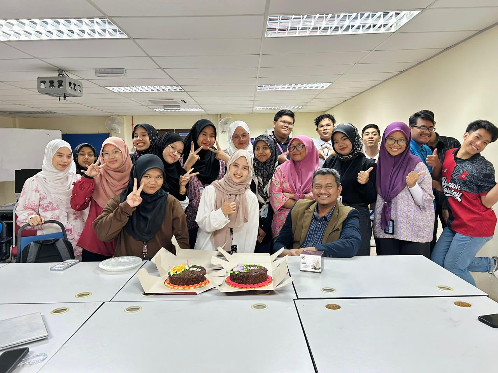
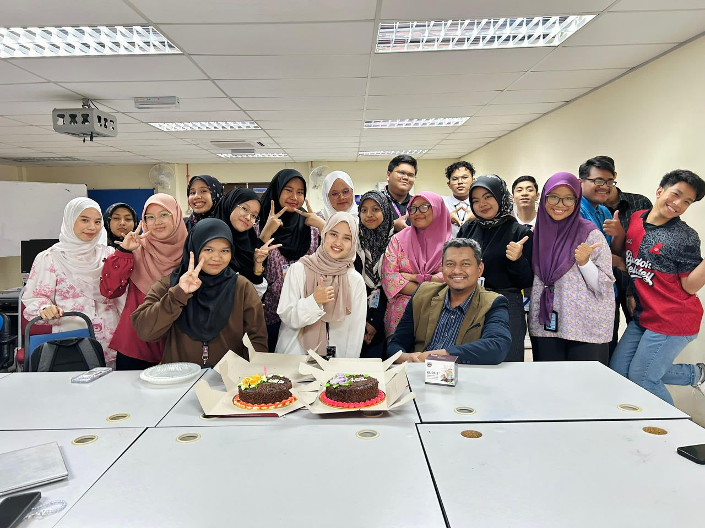
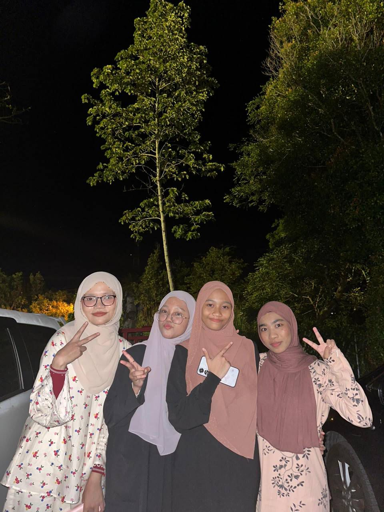
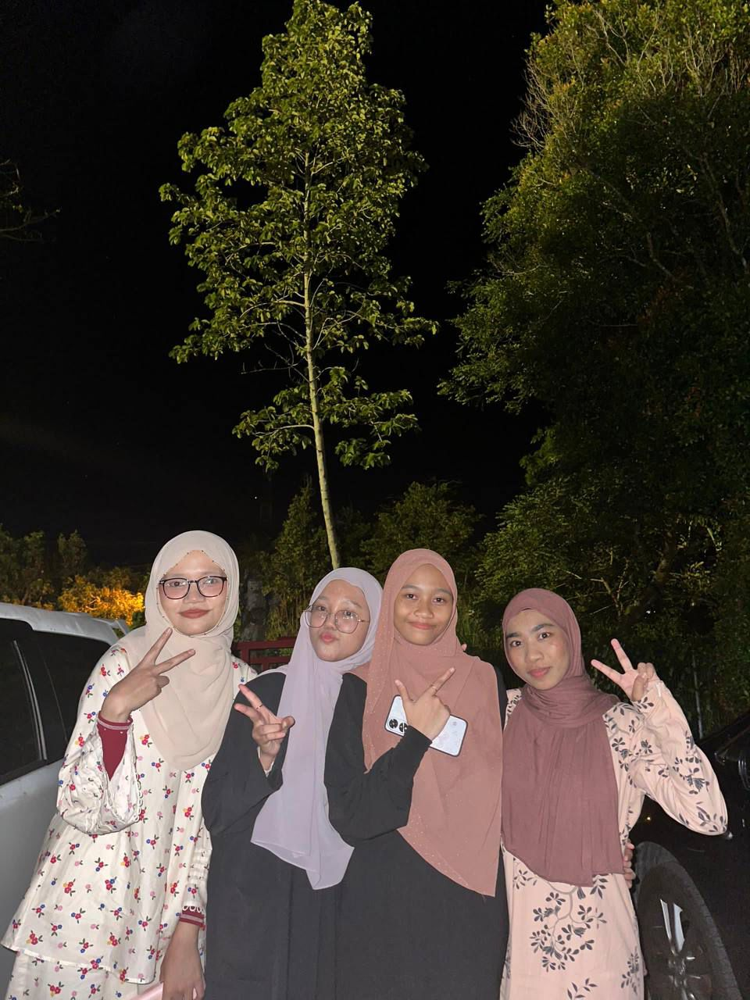
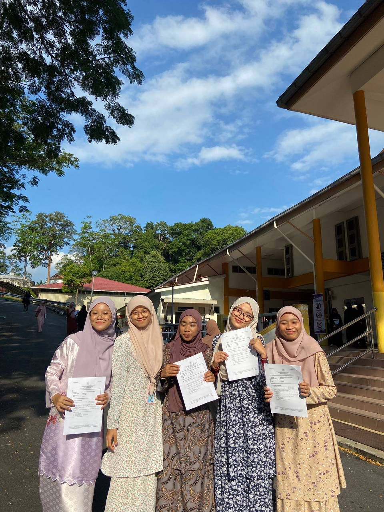
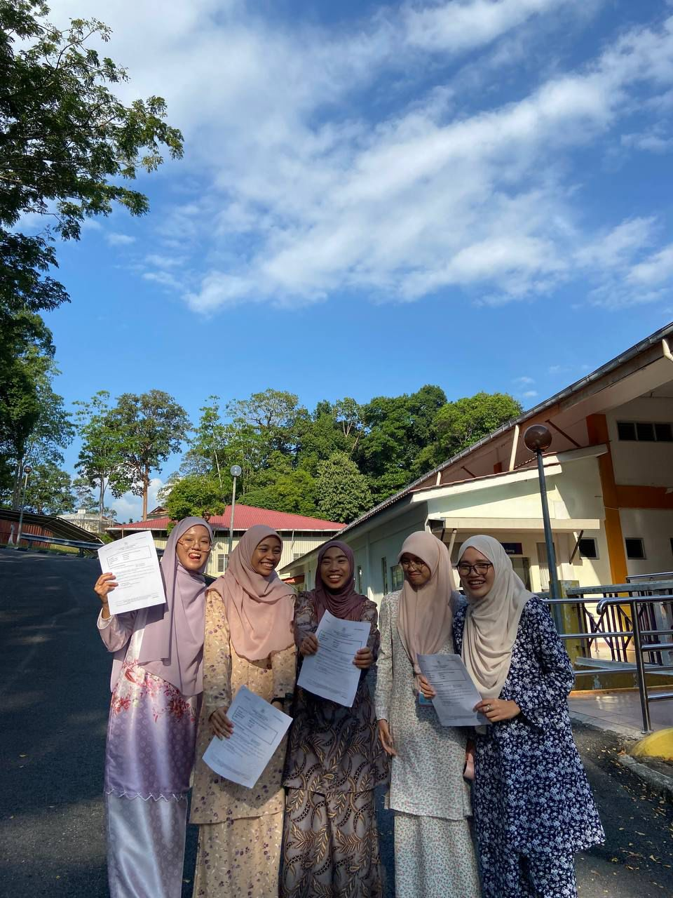
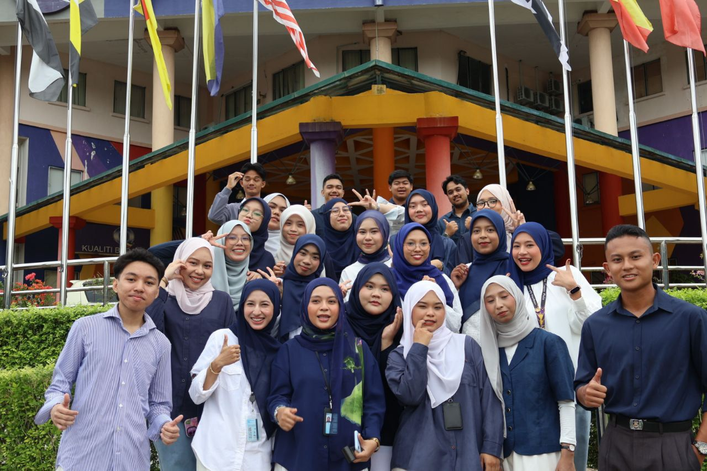
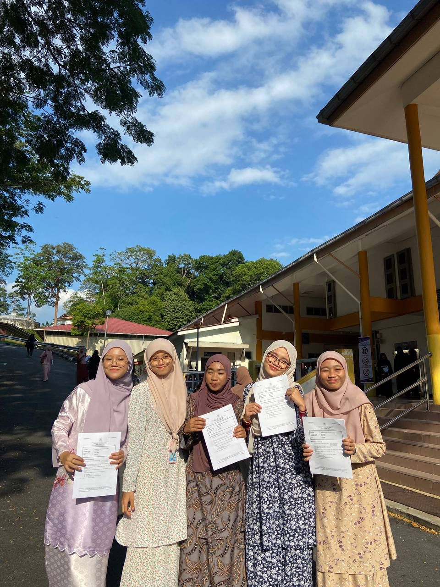
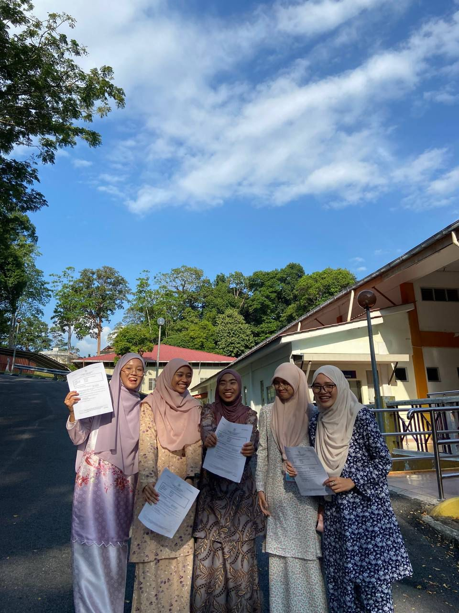
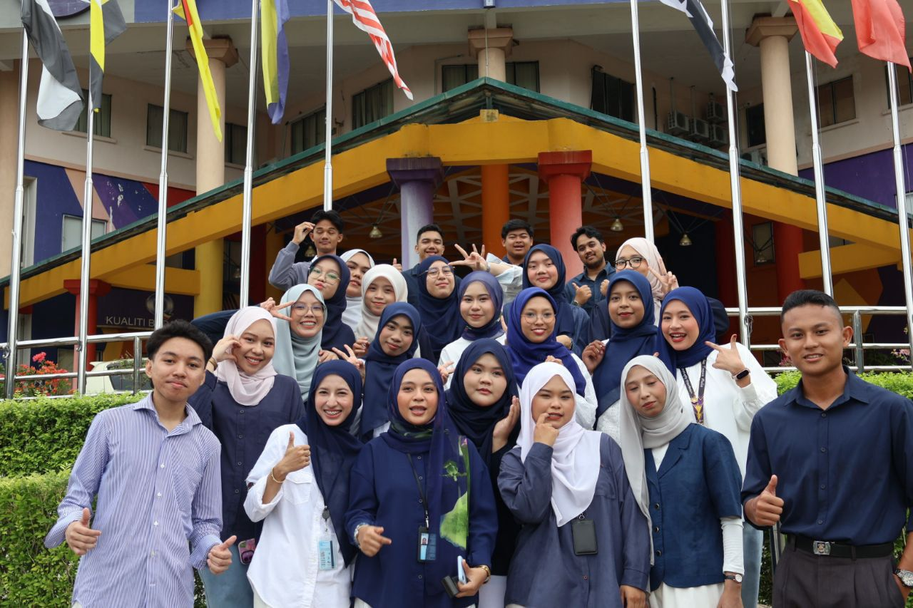

Friends!
In this page I will introduced my friends from high school until my university life. This is most of my friends that I have made memories with. There is also other friends that is not features here because lack of pictures. Eventhough there is not a lot of picture, I still hope you will enjoy this page as much as I do.
 

Diploma Friends
In this section I present to you some pictures of my friends that I have made during my diploma studies. In this section I present to you the pictures of my close friends and classmate.
 

 





Highschool Friends
This is my friends from high school!. I couldn't show you more pictures because we rarely take picture together at that time and most of the pictures already been deleted. Eventhough the pictures have been deleted the memories that we made together never been deleted from my memories. So I just present to you some of the pictures that I still have.